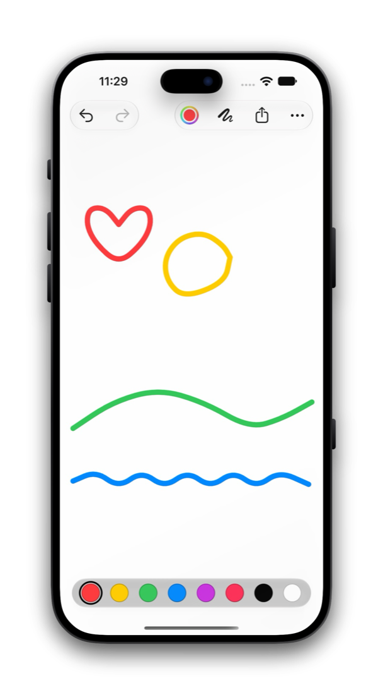

Drawing · iPhone · iPad · iPhone Duo
Just draw.
Nothing else.
A blank page, eight colors and your finger. Undo anything, share what you like.
A blank page.
Eight colors.

1 · Color
Pick a color.
Eight colors at your thumb, or open the color picker for any other.
2 · Draw
The page starts drawing.
It starts the moment you touch it. Choose a thicker or thinner brush when you want one.
3 · Share
Share what you like.
Send the drawing as a picture, or choose Save Image to keep it in Photos.
iPhone Duo
Fills whichever display.
Closed, open or part way, the page takes the room it is given. The controls follow the system to the side of the screen, as they do in Apple’s own apps.

No accounts, no ads, no tracking, no permissions and no network.
Small on purpose
Everything the page needs. Nothing it does not.
Undo anything.
Shake to undo, swipe with three fingers, or press ⌘Z. Clearing the page can be undone too, so you never have to ask twice.
Finger or Apple Pencil.
The line starts the instant you touch down, and smooth curves keep fast strokes from looking jagged.
iPhone and iPad.
Portrait or landscape, full screen or in Split View.
English and Swedish.
Just Draw follows your language: Just draw. becomes Rita bara.
Private by design.
No accounts, no ads, no tracking, no permissions and no network. Your drawing stays on your device. Read the privacy policy.
A clean picture.
Share as a PNG through the system share sheet. The hint and toolbar are never part of the picture.
Get Just Draw.
In TestFlight beta now. For iPhone and iPad with iOS 27 or later, in English and Swedish.